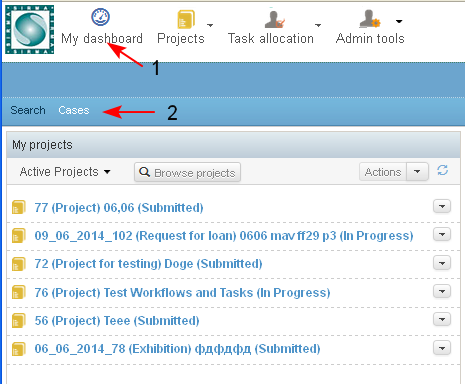
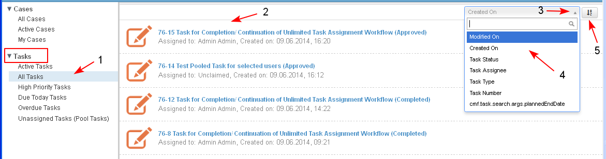
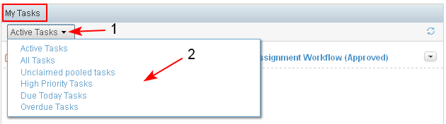

In the system are used default filters for visualization of the tasks of each user. These filters are executed only on the tasks assigned to the currently logged user.
- The user has access to the default tasks filters via Personal Dashboard/ Cases (1-2).

- The system opens a screen where the user selects Tasks from the panel on the left of the screen. A list with default filters for tasks is opened and the user may choose a filter (1).
The following predefined filters may be selected and executed by the user for his/ her own tasks:
- Active Tasks - visualizes all tasks of the current user which are in state "Approved", "In Progress", "On Hold".
- All Tasks - visualizes all tasks of the current user regardless of the state and priority.
- High Priority Tasks - visualizes all opened tasks of the current user (in state "Approved", "In Progress", "On Hold") which are with the highest priority.
- Due Today Tasks - visualizes all opened tasks of the current user for which the due date for completion is within the current day.
- Overdue Tasks - visualizes all opened tasks of the current user for which the due date for completion has expired.
- Unassigned Tasks (Pool Tasks)
- The system displays the result (2). By default the tasks are visualized in the list, paginated, regarding the date of creation of the task, the most recent are on top.
- The user is able to sort the results by different criteria (3-4), ascending / descending (5).

NOTE: The same filters are applied in "My Tasks " dashlet on the Personal/ Project/ Case Dashboard.
